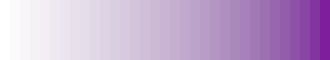

Palette class¶
-
class
colourettu.Palette(start_colour=<colourettu.Colour #FFFFFF>, end_colour=<colourettu.Colour #000000>)[source]¶ Class for creating a palette of colours.
A palette here is a list of colours.
Parameters: - start_colour (colourettu.Colour) – the colour you want your palette to start with.
- end_colour (colourettu.Colour) – the colour you want your palette to end with.
Note
If a string, tuple, or list is provided for start_colour or end_colour, a conversion to a
colourettu.Colourobject will be attempted.from colourettu import Palette p1 = Palette() p1.to_image('p1.png', 60)
all_colours = [c1, c2, c3, c4, c5, c6] p2 = Palette() p2.from_list(all_colours) p2.to_image('p2.png', max_width=360, vertical=False)
-
blend(cycles=1)[source]¶ Explands the existing Palette by inserting the blending colour between all Colours already in the Palette.
Changes the Palette in-place.
Parameters: cycles (int) – number of blend cycles to apply. (Default is 1) Example usage:
p1.blend() p1.to_image('p1_blended.png', 60, vertical=False)
p2.blend() p2.to_image('p2_blended.png', 60, vertical=False)
The blend functionallity can be applied several times in a sequence by use of the cycles parameter. This may be useful to quickly get a longer series of intermediate colours.
p3 = Palette(Colour('#fff'), Colour('#7e1e9c')) p3.blend(cycles=5) p3.to_image('p3.png', max_width=360, vertical=False)
See also
-
from_list(list_of_colours, normalized_rgb=False)[source]¶ Given an interable (usually a list or a tuple) containing
Colours, this then becomes the Colours contained by the Palette.Parameters: - list_of_colours (list, tuple, or other interable) – a collection of
Colours to be loaded into the palette. If these arecolourettu.Colour‘s, they will be loaded directly. Otherwise, an attempt to convert each item to acolourettu.Colourwill take place. - normalized_rgb (bool) – assuming the list is to be converted to
colourettu.Colours, this parameter is passed on as part of that conversion process.
- list_of_colours (list, tuple, or other interable) – a collection of
-
to_image(filename='palette.png', band_width=1, length=60, max_width=0, vertical=True, alpha_channel=False)[source]¶ Creates an image from the palette.
Parameters: - filename (Optional[string]) – filename of saved file. Defaults to
palette.pngin the current working directory. - band_width (optional[int]) – how wide each colour band should be. Defaults to 1 pixel.
- length (Optional[int]) – the length of the overall image in pixels.
This is the dimension orthogonal to
band_width. Defaults to 60 pixels. - max_width (Optional[int]) – if
band_widthis not set and this is, this determines how wide the whole image should be. - vertical (Optional[bool]) – if the image runs vertical (
True, default) or horizontal (False). - alpha_channel (Optional[bool]) – if
True, the created image will have an Alpha channel. Defaults toFalse.
- filename (Optional[string]) – filename of saved file. Defaults to